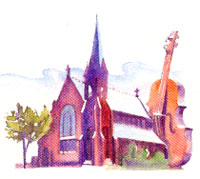
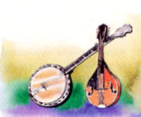
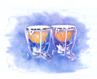
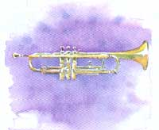
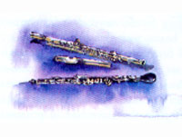
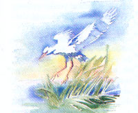
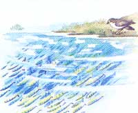
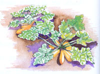
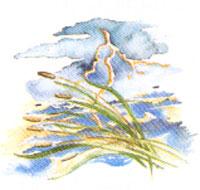

Ode To A Fair Bay
A children's story about the words behind the Rites of Passage composition.
By John Hay
March/April 1990
One evening in St. Mark's Episcopal Church in Washington, D. C., a marriage of prose and music was celebrated in a performance called Rites of Passage. It sanctified Chesapeake Bay, perhaps all bays, even all nature. The music was composed by Frances Thompson McKay. Flutist Kitty Hay, the author’s daughter, was among the players. Here, the music must be imagined-flute, oboe, trumpet, strings, and kettledrums-and so must the voice. But not the words.
It is said Captain John Smith, "a faire Bay compassed but for the mouth with fruitful and delightsome land. Within is a country that may have the prerogative over the most pleasant places of Europe, Asia, Africa, or America, for large and pleasant navigable rivers. Heaven and earth never agreed better to frame a place for man's habitation”
Out of the waters of the Chesapeake came a wilderness store of food-oysters, crabs, and clams; unending schools of fish; and in the glistening marshes where waterfowl fed on smartweed, wild celery, eelgrass, and sea lettuce, were mus-krat, river otter, beaver, and mink. Gentle, shallow waters along a shoreline of four thousand miles seemed to invite the world in to share its riches. And the Susquehanna and its great estuary flowed with a primal energy founded in the vast, still unknown continent behind them.
It was a tidal world in motion, never the same, as we ourselves have been in motion ever since we found it, taking all we could to satisfy our needs. But can we take so much that we become strangers to the bay? Will the fishing ruin the fishermen, and the harvest of the rivers die? Can we subdue and conquer these great waters beyond their capacity to receive us?
Where the Chesapeake lies under the mists of dawn, or opens out to sunlight-shattered waters, its surface falls and rises, inhaling, exhaling, like the lungs of the living world. The bay is a state of being, a great heart pulsing with the tides, exchanging sea and river water in its veins.
Twice a day the sea mounds in and rolls its free length up the bay. Twice a day great water masses mix and change, as river waters run toward the open sea.
In this body is the earth's desire. The fishes and the plankton suspended in its depths respond to beauties of transformation, everlasting change. Storms pass over them and they abide.
Now the thunder rolls, and pounds the great tympanum of the bay. Low and heavy it rolls. Lightning swells and flashes over the long, low shores, and flying sheets of rain fall in bits and smithereens out of violent darkness with a wind whose spirit strips the trees.
So the Chesapeake has felt the hurricanes across its giant back, in their wild screaming boats scattered and sunk, trees uprooted, islands washed away . . . in that fury the outer seas unleash, born of the world ocean and its invincible demands, moving in with judgments past undoing.
The mighty Susquehanna, empowered by a hurricane, rising on the flood, once drove the sea back farther than living memory; but the sea returns for its unending conflict and collusion with the river.
The storm is over. The clouds clear off toward that everlasting blue which is the testament of vision, the breeding ground of hopes and dreams; and everything on earth prays to the sun.
"Life is a pure flame, and we live by the invisible sun within us."
-Sir Thomas Browne
Every cove, inlet, marsh, each creek and river has its own distinction, known to every life that seeks it out. Here is the wild-ness we rejected, the food we still demand, the oysters and the clams, the crabs and fish that were also the food of the people who lived with this land, in intimate dependency, thousands of years before we came and gave their now legendary names to the rivers of the Chesapeake: Wicomico, Rappahan-nock, Choptank, Potomac, Pocomoke.
"We always had plenty; our children never cried from hunger, neither were our people in want. . . . The rapids of the River furnished us with an abundance of excellent fish, and the land being very fertile, never failed to produce good crops of corn, beans, pumpkins, and squashes. . . . Here our village stood for more than a hundred years, during all of which time we were the undisputed possessors of this region. . . . Our village was healthy and there was no place in the country possessing such advantages, nor hunting grounds better than those we had in possession. If a prophet had come to our village in those days and told us that the things were to take place which have since come to pass, none of our people would have believed him."
-Ma-ka-tai-me-she-kia-kiak,
or Black Hawk, Chief of the Sioux and the Fox
From Touch the Earth, compiled by T.C. McLuhan
River water streaming and coiling in its abundance, backtracking, pausing, running to the sea. Out on the great bay the passion of riptides pulling at the boats, lifting human balance and releasing it. This energy and fury, and innate calm, the bold dignity of waters running their own free way, while the life within them holds under the distant magnets of earth and sky. Do we not belong here? Can we return?
White fog settles in over the shining grasses, and tired boats, tethered to pilings, lie on their own shadows.
Tidewaters gulp, and unseen fishes splash. There is a whisper in the wind over a deeper silence, where we might remember being born.
Oh Chesapeake, how can we forget your marshes with their tidal swirling in our ears, and their inclusion of the multitudinous facets of light. These are sacred channels, keeping the tidal rise and fall of birth and death in an eternal balance.
When showers pass and clouds blow by, the "Johnny Crane," holding its yellow spear in readiness, reflects sky blue upon its wings. While in a warm hour the frogs are croaking with the voice of water, a slim egret, with pure white wings and body like a shell, lifts from tall grasses with a snoring cry. In September, the young menhaden flip and turn their silver bodies in the shallow river winding through the marsh. How beautiful the fishes, every tribe with its precious distinction: white perch, yellow perch, shad and alewives, the slim young catfish, and the striped bass. They have tracings on their skin of water's varying light, delicate and unequaled markings. Fishes lift the human spirit out of isolation.
To fill and lay waste the marshlands, to deliver them unto degradation, is to lose our own protection. They shelter origins, and the earth requires them.
Out beyond the channeled grasses, across the spreading waters, in the air itself, the winds are chasing an immortal distance.
The colonists came in from everywhere, around the compass, around the clock, settling in to these generous shores; and they shot die deer, treed coons, stewed squirrels or snapping turtles for dinner, trapped beaver and muskrat, fished the rivers, and raised corn and tobacco. They warred with nature and enjoyed its fruits. Canoes, punts and piraguas, bateaux and barges, flats, pinnaces, and shallops plied the rivers.
Out over the bay, skiff, ketch, and yawl, sloop and schooner, grew in number so as to rival whitecaps on the waves. They raced their Thoroughbreds and quarter horses; they loved and they hated; they argued, quarreled, and sometimes moved away. The watermen dredged for oysters, tonged for clams, and the soft-shell crab was a regional triumph. Home-cured ham, pork and pone, turnips and salad greens, hog jowls and black-eyed peas grew from this abundant land. And in the evening, when the golden sunlight of autumn flushed salt meadows and a hundred thousand wings wheeled in the air and began to settle in, their appetites were whetted by the splendor of the geese.
America was settled by a world from overseas that cut down what it found, and then moved on. Fire and ax destroyed the primal forests. Tobacco robbed the soil of its fertility, and the exhausted fields were abandoned to the wind and rain.
Erosion sent topsoil down the Susquehanna, the Rappahannock, the Potomac, and the James. For every mile, each year, hundreds of tons of sediment went into the bay waters, and the shallow Chesapeake began to grow old before its time.
Far out, the sanderlings skim across the headlands and the beaches, and wheel above the crisscrossed, tumbling green waters, as the spokes of the sun's wheel strike through running clouds.
A yellowlegs, turning on itself, yanking through the shallows, whips out its piercing whistle; and the gulls, with their shivering, silvery screams and laughter, cry out for water's magical locations.
Backed by the continent, fed by its rivers, entered by the majesty of the sea, the bay still speaks a language of capacity, of endless patience, but it will never endure a race that only knows how to spend earth's substance on a world of waste and greed.
Water is birth and mystery, water in our hearts and minds, the engines of love and deliberation. Water is our guide, however far we turn away.
America meant 'improvement." Rivers were channeled, dammed, bridged over, made useful for navigation. We did not want them to stand in our way, with their own rules. We did not like them to run free, leaving us at the mercy of their floods and periods of low water, refusing us passage. We improved them and left them behind. We loaded their timeless journeys with the deadly passage of our wastes.
"The rivers of Virginia are the God-given sewers of the State."
Thus spoke the 19th century.
Long live convenience.
God save Virginia
The germinative rivers, the bringers of life, began to carry more black oil and poisons to the bay. The silver alewives and the shad, mounting the rivers in their spawning fire, were blocked by dams and started to disappear. The famous sturgeon was nowhere to be found. Marsh plants began to die; underwater vegetation died; numberless oysters never reached maturity. What has happened to the rockfish, the great striped bass that spawns in the prolific waters of the Chesapeake, the pride of all the states that border on the sea? Why is its progeny being cheated of existence?
The eye of the Chesapeake is clouded over. While the rivers send their foul discharge into its heart and lungs, our own senses fail. Water is light and vision. Without its clarity we soon go blind.
What lies under these pulsing, ribbony waves? Do we dare to look? Billions of gallons of industrial waste, a desolation of herbicides and pesticides, sulfates and nitrates, chlorine, gas, and oil. What lies there but a wasting of the heart?
Only man can destroy the bay; only man can destroy himself.
We are the victims of our own ignorance and love of power. We do not know the limits of these waters, until we pass them; and we never gave ourselves the time.
Native Americans declared: "A frog does not drink up the pond in which it lives."
That suggests a frog's intelligence may be on a higher level than our own.
But there is time, within the earth, for recognition. Still, and always, the seabird lifts to the impenetrable light that dances on the tides. And the eyes of schooling fishes stare ahead into the waterways of the future.
These are true inheritors, children of amplitude, as it was in the beginning. They live at home with mystery, the great design of life, in which all species are kindred. We cannot live outside them and survive.
Until we learn to recognize these waters in ourselves, they will age, sicken, and die. Violence will be returned for violence, dying for dying. The rivers will turn against us; the Chesapeake will have its vengeance; the continent will call us aliens, strangers to its spirit. When the great network of living veins and arteries begins to shrivel and dry, the spirit of the people also dies. The seas within us die.
America is not the product of industry but of shared existence.
To give up on the Chesapeake is to give up on ourselves. Listen to it. Watch its cosmic, universal eye. Rediscover sanity. Return.
Come home again. Come home.
|
 |
 |
 |
|
 |
 |
 |
|
 |
 |
 |
|
 |
|
|